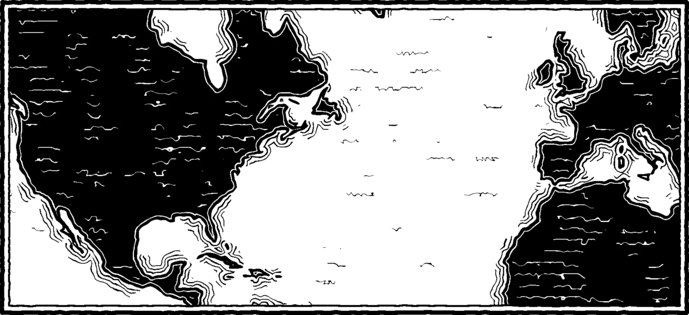

Where I've been
Drag along the years

Certifications 3
- Masters of AI, Core Curriculum (2026)Masters of AI
- AI Foundation™ CourseMasters of AI
- Freelance Writing: How to Get Published in Print and OnlineCity, University of London
Languages 2
- Spanish
- English
Contact
Drag along the years or hover a pin on the map.